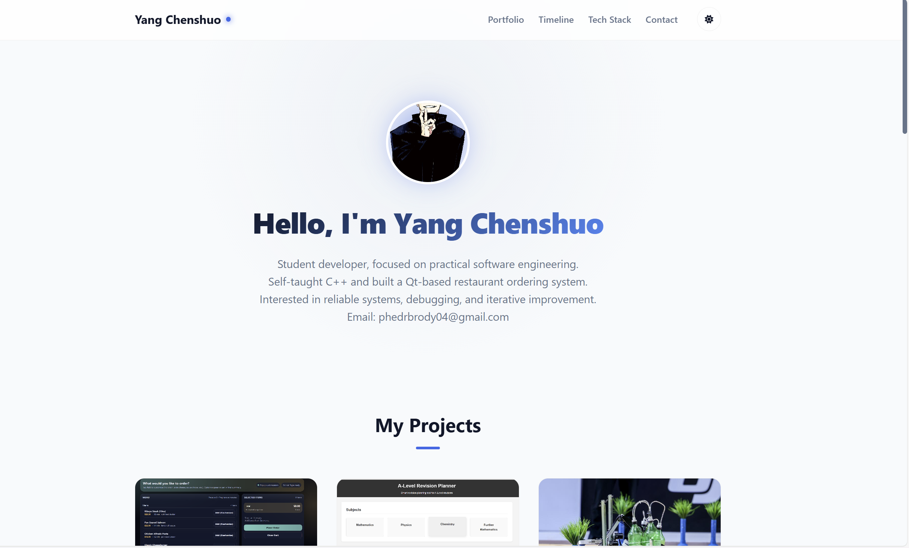
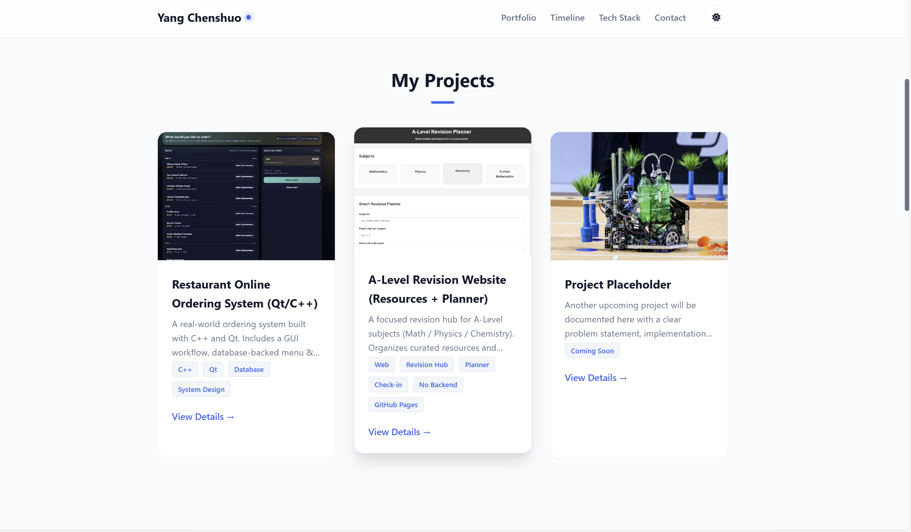
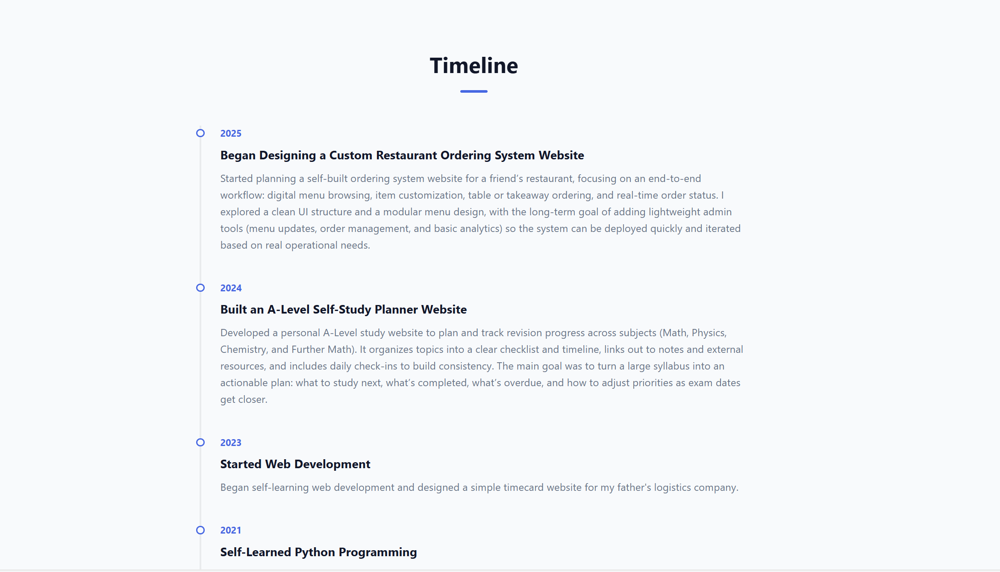

A modern personal portfolio built for showcasing projects, skills, and timeline milestones. Designed with a clean card-based layout, theme switching (light/dark), and a modular structure that makes updates fast and consistent.


